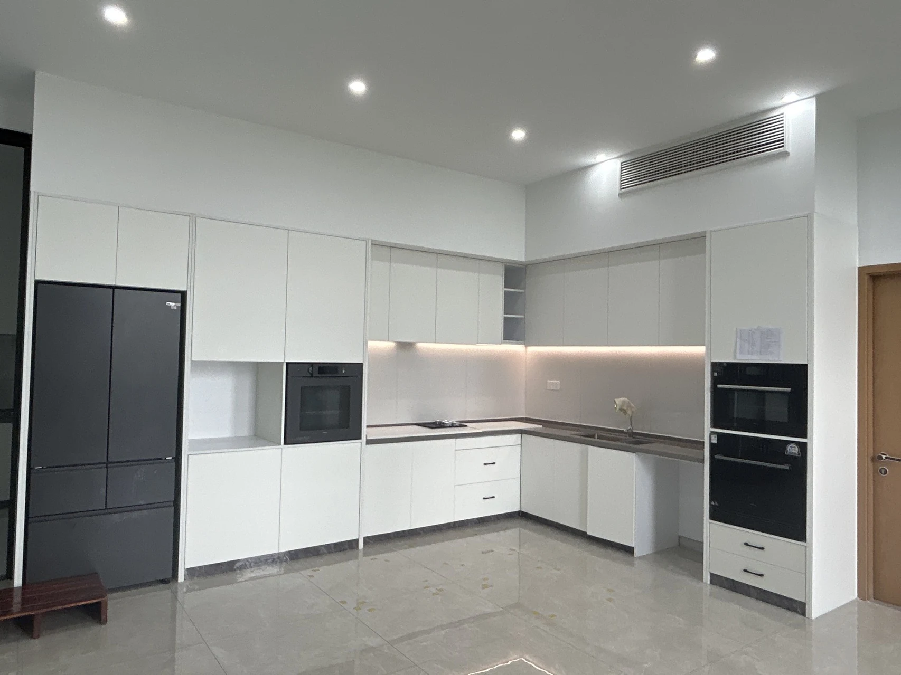
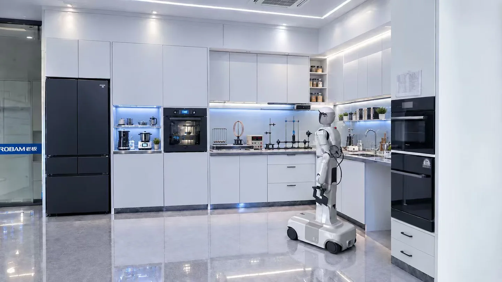

项目加载中
项目概述
空间表达
深化呈现
改造前后对比
以下三张照片均为你刚刚提供的实验室改造前原图，按空间视角分别对应：原有厨房柜体、实验室整体空间、中央岛台区域。选择一个视角，再拖动滑块与对应的改造概念图进行比较。
改造前 · 原有厨房柜体改造后 · 概念方案


← 向左拖动查看改造前 / 向右拖动查看改造后 →
以下三张照片均为你刚刚提供的实验室改造前原图，按空间视角分别对应：原有厨房柜体、实验室整体空间、中央岛台区域。选择一个视角，再拖动滑块与对应的改造概念图进行比较。


← 向左拖动查看改造前 / 向右拖动查看改造后 →